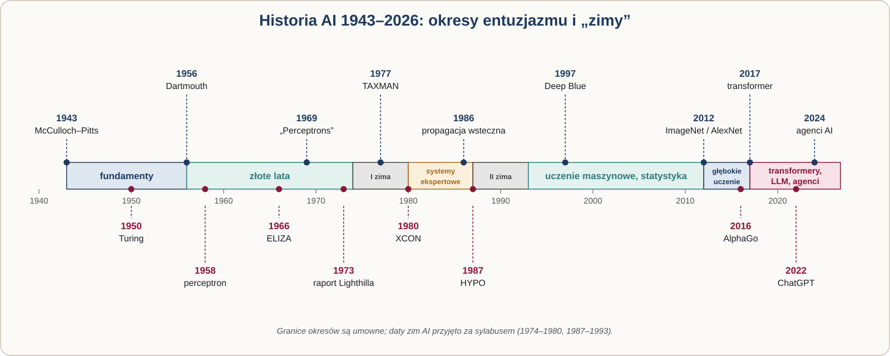
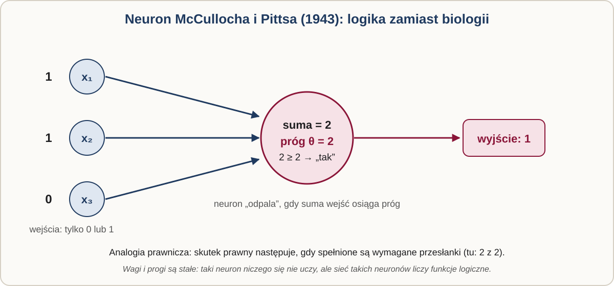
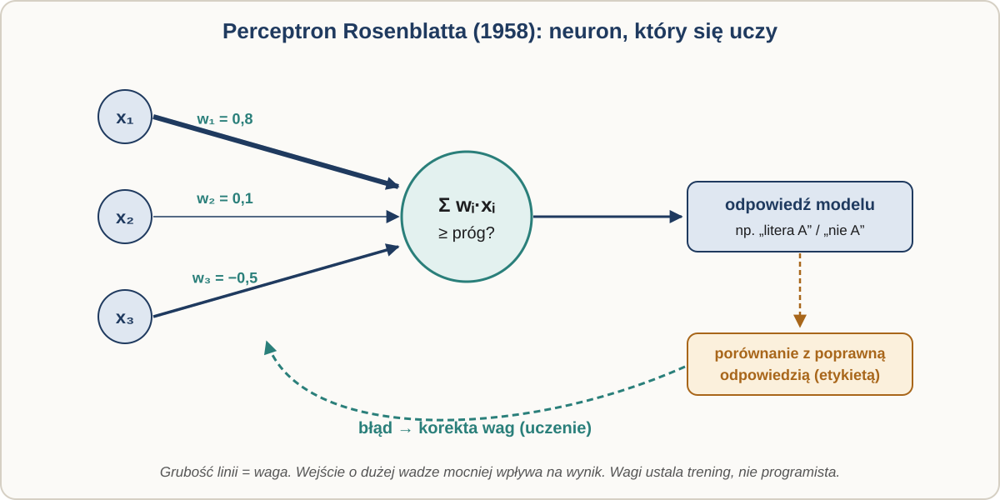
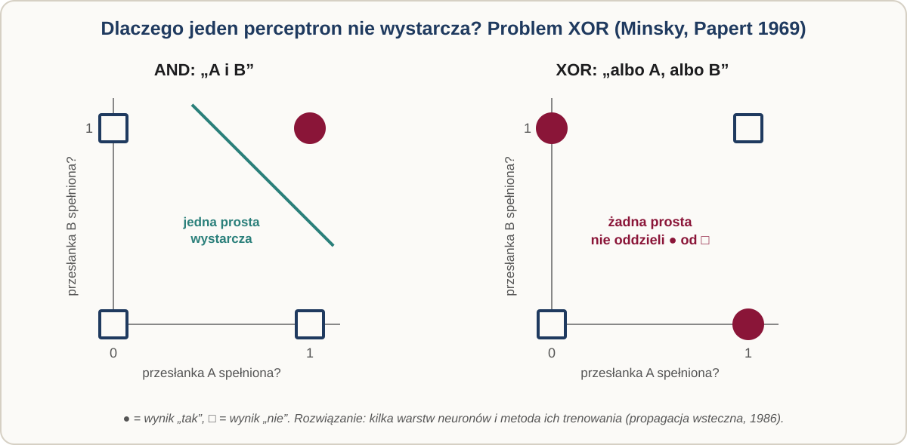
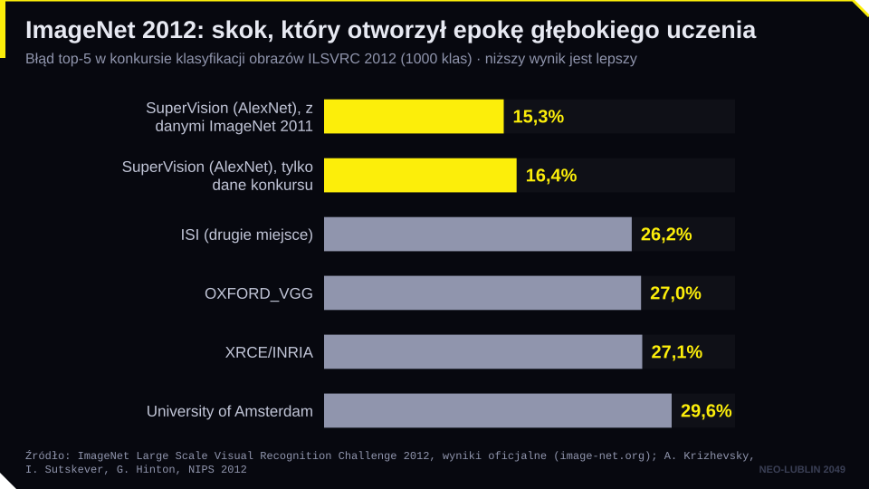
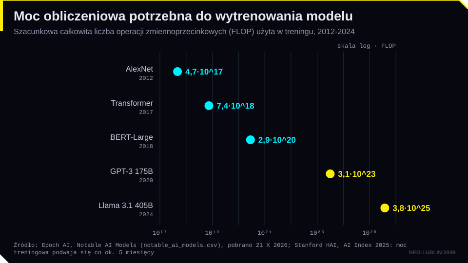
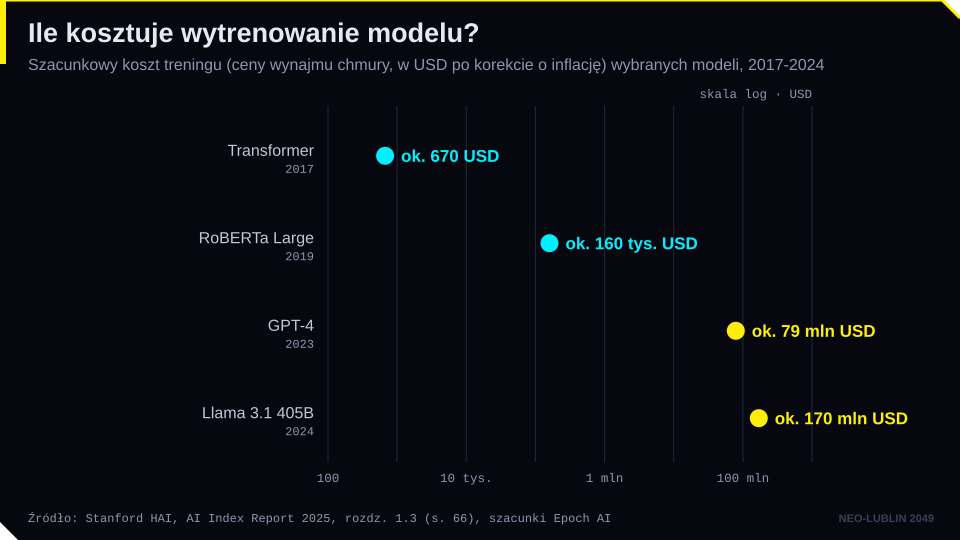
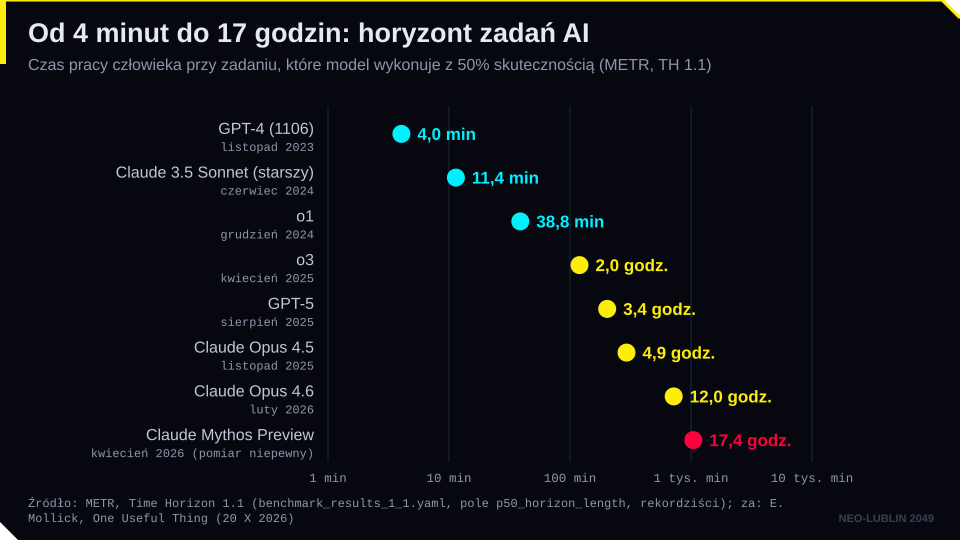

Cel modułu. Po zajęciach student potrafi wskazać najważniejsze etapy rozwoju sztucznej inteligencji (AI) od prehistorii do agentów AI, odróżnić AI symboliczną od AI opartej na uczeniu z danych, wyjaśnić przyczyny dwóch „zim AI” oraz ocenić, czego historia uczy prawnika, który stosuje i tworzy regulacje AI.
Pytanie przewodnie. Dlaczego sztuczna inteligencja kilka razy „prawie się udała”, a potem na lata znikała z agendy? I czy dzisiejszy boom różni się od poprzednich?
Jak czytać tę stronę. Tekst główny odpowiada kolejności slajdów. Kolorowe ramki zawierają to, czego nie ma na slajdach: definicje, przepisy, przykłady, pułapki i źródła. Odsyłacze „▶ slajd” otwierają odpowiedni slajd w nowej karcie. Ćwiczenia z podpowiedziami i lista lektur są na końcu strony.
1. Prehistoria: marzenie o myślącej maszynie
Opowieści o sztucznych istotach są dużo starsze niż komputery. Grecki Talos, spiżowy strażnik Krety, i praski Golem z gliny mają wspólny motyw: sztuczny sługa wyręcza człowieka, ale może wymknąć się spod kontroli. Słowo „robot” wymyślono dopiero w XX wieku. Pojawia się w sztuce Karla Čapka „R.U.R.” (1920, prapremiera 1921), a zaproponował je brat pisarza, Josef. Pochodzi od czeskiego robota, czyli pracy przymusowej. ▶ slajd: Mity i opowieści
Od starożytności budowano też automaty: mechanizmy Herona z Aleksandrii, urządzenia opisane przez al-Dżazariego (1206), kaczkę Vaucansona (1739) czy „Pisarza” Jaquet-Droza (1768–1774). Automat wykonuje z góry ustaloną sekwencję. Nie reaguje na otoczenie i niczego się nie uczy. To ważne rozróżnienie, które wróci na następnym spotkaniu: program wykonuje polecenia człowieka, a model uczony wyprowadza swoje zachowanie z danych. ▶ slajd: Automaty
Automat, program, model uczony. Trzy sposoby, w jakie maszyna „wie”, co zrobić.
- Automat: sekwencja zapisana w konstrukcji (krzywki, koła zębate). Zmiana zachowania wymaga przebudowy.
- Program z regułami: sekwencja zapisana w kodzie przez człowieka. Zmiana zachowania wymaga zmiany kodu.
- Model uczony: zachowanie wyprowadzone z danych i zapisane w liczbach (wagach). Zmiana zachowania wymaga nowych danych albo douczenia.
Ta trójka wróci przy definicji systemu AI w AI Act (sekcja 7).
Szczególnie pouczający jest „Turek” Wolfganga von Kempelena (1770). Automat grający w szachy wygrywał pokazy na dworach Europy, ale w skrzyni ukrywał się żywy szachista. W 2005 r. Amazon nazwał od niego platformę mikrozadań Amazon Mechanical Turk. Na tej platformie tysiące ludzi opisywały później zdjęcia do zbioru ImageNet, który stał się paliwem rewolucji głębokiego uczenia. Za wieloma systemami „sztucznej inteligencji” stoi więc praca ludzi, o czym będziemy mówić na spotkaniu 4. ▶ slajd: „Turek” Kempelena
Ukryty człowiek. Gdy wynik „AI” jest zaskakująco dobry, a model nie potrafi wyjaśnić, skąd go ma, warto zapytać, kto naprawdę wykonał pracę: autorzy danych treningowych, osoby opisujące i oceniające odpowiedzi, moderatorzy. Dla prawnika to pytanie o warunki pracy i prawa autorskie, a także o to, co obiecuje dostawca systemu. „Turek” jest najstarszym przykładem podawania pracy człowieka za pracę maszyny.
Filozoficzne korzenie AI to idea, że rozumowanie da się zapisać w symbolach i regułach. Rajmund Lullus (ok. 1232–1316) w „Ars generalis ultima” (1305–1308) budował obracające się koła z pojęciami, które miały mechanicznie generować prawdziwe twierdzenia (o jego metodzie: Stanford Encyclopedia of Philosophy). Gottfried Wilhelm Leibniz, filozof, matematyk i doktor prawa, zbudował maszynę liczącą (model pokazał w Royal Society w 1673 r.), opisał arytmetykę dwójkową i marzył o uniwersalnym języku pojęć (characteristica universalis) oraz rachunku, który pozwoli rozstrzygać spory. Zamiast się kłócić, strony miałyby powiedzieć: Calculemus!, czyli „policzmy!”. Dla prawnika to szczególnie prowokujące marzenie: spór prawny rozstrzygnięty rachunkiem. ▶ slajd: Lullus ▶ slajd: Leibniz
Leibniz był prawnikiem. Studiował prawo w Lipsku, a doktorat z prawa uzyskał w 1667 r. w Altdorfie na podstawie rozprawy o przypadkach trudnych w prawie (Disputatio de casibus perplexis in jure). W tym samym roku opublikował Nova methodus discendae docendaeque jurisprudentiae, projekt uporządkowania nauki prawa przez sprowadzenie pojęć do prostych składników. Pomysł rachunku pojęć narodził się więc częściowo z pracy nad prawem. Więcej: Leibniz w Stanford Encyclopedia of Philosophy.
W XIX wieku Charles Babbage zaprojektował maszynę analityczną z pamięcią, jednostką liczącą i programem na kartach perforowanych. Maszyny nie zbudowano, ale Ada Lovelace w notach do przekładu artykułu o niej (1843) zapisała algorytm obliczania liczb Bernoulliego, często nazywany pierwszym programem komputerowym. Lovelace zastrzegła też, że maszyna nie ma pretensji do tworzenia czegokolwiek; wykonuje tylko to, co umiemy jej polecić. Ten „zarzut Lady Lovelace” będzie później omawiał Turing (noty Lovelace w wersji online). ▶ slajd: Babbage i Lovelace
- Marzenie o sztucznym sługu jest starsze niż komputery; zawsze towarzyszy mu lęk przed utratą kontroli.
- Automat wykonuje, program wykonuje polecenia człowieka, model uczony wyprowadza zachowanie z danych.
- „Turek” przypomina, że za „sztuczną” inteligencją często stoi praca ludzi.
- Leibniz marzył o rozstrzyganiu sporów rachunkiem: pierwszy projekt „prawa obliczalnego”.

2. Fundamenty (1943–1958)
W 1943 r. neurofizjolog Warren McCulloch i dwudziestoletni samouk Walter Pitts opublikowali artykuł „A Logical Calculus of the Ideas Immanent in Nervous Activity”. Zaproponowali pierwszy matematyczny model neuronu: jednostkę, która przyjmuje sygnały 0 lub 1 i „odpala”, gdy suma sygnałów osiągnie próg. Sieć takich jednostek może obliczać funkcje logiczne. Prawnik może myśleć o tym jak o przepisie z przesłankami: skutek prawny następuje, gdy spełnione są wymagane przesłanki. Neuron McCullocha i Pittsa niczego się jednak nie uczy, bo progi ustala badacz. ▶ slajd: McCulloch i Pitts

Neuron McCullocha–Pittsa. Jednostka z wejściami i progiem . Wyjście wynosi , gdy , a w przeciwnym razie . Przy próg daje bramkę I (oba warunki muszą zachodzić), a próg bramkę LUB.
Przesłanki jako bramka. Przepis: „skutek następuje, gdy zachodzą przesłanki A i B”. Neuron z progiem 2 i wejściami A, B zachowuje się dokładnie tak: odpala tylko przy A = 1 i B = 1. Przepis z alternatywą („A lub B”) odpowiada progowi 1. Analogia jest pouczająca z jednego powodu: progi i połączenia ustala człowiek, więc taka sieć jest po prostu zapisanym przepisem. Dopiero perceptron zacznie dobierać je sam.
W 1950 r. Alan Turing opublikował w czasopiśmie Mind artykuł „Computing Machinery and Intelligence”. Zamiast pytać, czy maszyny myślą, zaproponował grę w naśladowanie (szerzej: spotkanie 1) i przewidział, że za około 50 lat przeciętny przesłuchujący po pięciu minutach rozmowy będzie miał nie więcej niż 70% szans na rozpoznanie maszyny. Mniej znana część artykułu jest równie ważna: Turing sugerował, by nie programować dorosłego umysłu, tylko zbudować „umysł dziecka” i go uczyć. To program badawczy, który zrealizowało dopiero uczenie maszynowe. ▶ slajd: Alan Turing
Test Turinga to nie definicja inteligencji. Turing sam zastąpił pytanie „czy maszyny myślą?” pytaniem o rozróżnialność w rozmowie, bo to pierwsze uznał za zbyt niejasne. Przejście testu pokazuje biegłość w naśladowaniu rozmowy, a nie rozumienie. Dla prawnika wniosek jest praktyczny: wiarygodnie brzmiąca odpowiedź modelu nie jest dowodem, że jest prawdziwa.
Nazwa „sztuczna inteligencja” pojawiła się w propozycji letniego projektu badawczego z 31 sierpnia 1955 r. Podpisali ją John McCarthy, Marvin Minsky, Nathaniel Rochester i Claude Shannon. Autorzy zakładali, że każdy aspekt uczenia się i inteligencji można opisać tak dokładnie, że maszyna zdoła go symulować. Warsztat odbył się latem 1956 r. w Dartmouth College (ok. 18 czerwca – 17 sierpnia) i uchodzi za narodziny AI jako dyscypliny. ▶ slajd: Dartmouth
Wniosek o pieniądze. Propozycję z 1955 r. skierowano do Fundacji Rockefellera jako wniosek o sfinansowanie dwumiesięcznego warsztatu. Wśród problemów, które autorzy chcieli rozwiązać „w jedno lato”, były: programowanie komputerów do używania języka, sieci neuronowe, samodoskonalenie się maszyn i kreatywność. Optymizm co do tempa, nie kierunku, okazał się największym błędem tego dokumentu (por. sekcja 3).
W 1958 r. Frank Rosenblatt przedstawił perceptron: neuron z wagami, które nie są ustalone z góry, tylko korygowane po każdym błędzie. Perceptron uczy się na przykładach z poprawnymi odpowiedziami. Pierwszy pokaz był symulacją na komputerze IBM 704, a sprzętowa maszyna Mark I Perceptron powstała w 1960 r. Prasa przyjęła wynalazek entuzjastycznie: The New York Times (8.07.1958) pisał o zalążku komputera, który ma chodzić, mówić, widzieć, pisać i być świadomy swojego istnienia. W rzeczywistości maszyna uczyła się rozpoznawać proste kształty. Ten wzorzec (realny postęp i przesadzona obietnica) zobaczymy w historii AI jeszcze kilka razy. ▶ slajd: Perceptron ▶ slajd: „Embrion komputera…”

Perceptron: jak się uczy. Dla wejść i wag perceptron oblicza sumę ważoną i zwraca , gdy , a w przeciwnym razie . Po każdym przykładzie, na którym się pomylił, koryguje wagi: , gdzie jest poprawną odpowiedzią, a małym współczynnikiem uczenia. Jeśli klasy da się rozdzielić jedną prostą (płaszczyzną), ta procedura zawsze znajdzie rozwiązanie. To pierwszy dowód, że maszyna może nauczyć się reguły z przykładów zamiast dostać ją od programisty.
- McCulloch i Pitts (1943): neuron jako bramka logiczna z progiem, bez uczenia.
- Turing (1950): zamiast „czy maszyna myśli?” gra w naśladowanie; pomysł „umysłu dziecka” zapowiada uczenie maszynowe.
- Dartmouth (1955/1956): powstaje nazwa „sztuczna inteligencja” i dyscyplina.
- Rosenblatt (1958): perceptron uczy się z przykładów, ale prasa i badacze obiecują więcej, niż umie.
3. Złote lata i pierwsza zima (1956–1980)
Lata 1956–1974 to okres optymizmu i hojnego finansowania, zwłaszcza wojskowego (DARPA w USA). Powstały programy dowodzące twierdzeń logiki (Logic Theorist), rozwiązujące łamigłówki (General Problem Solver), robot Shakey planujący własne działania oraz ELIZA (1966) Josepha Weizenbauma: program, który za pomocą prostych reguł podmiany słów udawał psychoterapeutę. Weizenbaum był zaskoczony, jak chętnie ludzie zwierzali się programowi, który nie rozumiał ani słowa. ▶ slajd: Złote lata
Efekt ELIZY. Ludzie przypisują rozumienie i intencje każdemu, kto rozmawia płynnie, nawet gdy wiedzą, że to program. Efekt opisano w latach 60., a dziś dotyczy chatbotów, którym użytkownicy zwierzają się z problemów prawnych i zdrowotnych. Dla regulatora wynika stąd obowiązek jasnego informowania, że użytkownik rozmawia z maszyną (por. art. 50 AI Act), a dla prawnika ostrożność wobec „empatycznego” tonu systemu.
Optymizm był ogromny. Herbert Simon pisał w 1965 r., że w ciągu 20 lat maszyny będą zdolne wykonać każdą pracę człowieka. Marvin Minsky w 1967 r. przewidywał, że w ciągu jednego pokolenia problem stworzenia AI zostanie zasadniczo rozwiązany. Badacze nie docenili tzw. paradoksu Moraveca: to, co trudne dla człowieka (logika, szachy), okazało się dla maszyn stosunkowo łatwe, a to, co łatwe dla dziecka (rozpoznawanie twarzy, chodzenie, rozumienie potocznej mowy), było niezwykle trudne. ▶ slajd: Prognozy z lat 60.
Paradoks Moraveca w kancelarii. Dla maszyny łatwe: znaleźć wszystkie wystąpienia słowa „rażące” w 50 000 orzeczeń. Trudne: ocenić, czy konkretne naruszenie jest „rażące”, bo to wymaga rozumienia kontekstu, celu przepisu i ocen społecznych. Podział pracy między prawnika a system wynika dokładnie z tego paradoksu.
Przyszły rozczarowania. W 1969 r. Minsky i Papert w książce „Perceptrons” wykazali, że jednowarstwowy perceptron nie potrafi obliczyć niektórych prostych funkcji. Klasyczny przykład to XOR, czyli „albo A, albo B, ale nie oba”. W 1973 r. raport Sir Jamesa Lighthilla dla brytyjskiej Science Research Council stwierdził, że AI działa w „zabawkowych” światach, a w realnych problemach grzęźnie w eksplozji kombinatorycznej: liczba możliwości rośnie szybciej niż moc komputerów. W USA poprawka Mansfielda (1969) zawęziła wojskowe badania do projektów o bezpośrednim zastosowaniu, a DARPA w latach 1973–1974 obcięła budżety na AI. Nastała pierwsza zima AI (ok. 1974–1980). ▶ slajd: „Perceptrons” ▶ slajd: Raport Lighthilla

XOR i granica jednego neuronu. Funkcja XOR zwraca 1, gdy dokładnie jedno z wejść jest równe 1:
| A | B | A XOR B |
|---|---|---|
| 0 | 0 | 0 |
| 0 | 1 | 1 |
| 1 | 0 | 1 |
| 1 | 1 | 0 |
Na płaszczyźnie punkty (0,1) i (1,0) mają wynik 1, a punkty (0,0) i (1,1) wynik 0. Żadna pojedyncza prosta nie oddziela tych par, więc perceptron jednowarstwowy nie może tej funkcji nauczyć się z żadnymi wagami. Dwie warstwy neuronów potrafią to zrobić.
Eksplozja kombinatoryczna. Liczba możliwych sytuacji rośnie wykładniczo wraz z rozmiarem problemu. W szachach liczbę możliwych partii szacuje się na rzędu (liczba Shannona), a liczbę legalnych pozycji na planszy go 19×19 na około . Przeszukanie wszystkich możliwości jest niemożliwe, więc potrzebne są heurystyki, a te w „prawdziwym świecie” zawodziły. To główny zarzut Lighthilla.
Mit: książka „Perceptrons” zabiła sieci neuronowe. Dowód Minsky’ego i Paperta dotyczył perceptronu jednowarstwowego, a nie sieci w ogóle. Zahamowanie badań miało więcej przyczyn: ograniczoną moc komputerów, brak metody trenowania sieci wielowarstwowych (ta przyszła w latach 80.), zmianę priorytetów finansujących i raport Lighthilla. Prosta opowieść „jedna książka zakończyła epokę” jest przykładem uproszczeń, które łatwo przeniknąć do prac prawniczych.
Debata Lighthilla. W 1973 r. BBC pokazała publiczną debatę o raporcie z udziałem Lighthilla, Donalda Michie, Richarda Gregory’ego i Johna McCarthy’ego. Materiały dotyczące debaty udostępnia Uniwersytet w Edynburgu: Lighthill Debate 1973.
- Lata 1956–1974: optymizm, wojskowe finansowanie, ELIZA, Logic Theorist, Shakey.
- Prognozy („w 20 lat”) się nie sprawdziły; paradoks Moraveca tłumaczy dlaczego.
- Przyczyny pierwszej zimy: granice perceptronu (XOR), eksplozja kombinatoryczna, raport Lighthilla, cięcia DARPA.
- Zima to nie koniec badań, lecz koniec łatwych pieniędzy.
4. Systemy ekspertowe i druga zima (1980–1993)
W latach 80. AI wróciła w postaci systemów ekspertowych. System ekspertowy ma trzy elementy: bazę wiedzy (setki lub tysiące reguł „JEŻELI … TO …”), silnik wnioskowania, który łączy reguły z faktami sprawy, oraz inżyniera wiedzy, który wydobywa reguły od ekspertów. Wielką zaletą takiego systemu jest przejrzystość: każdą decyzję można wyjaśnić, wskazując reguły, które zadziałały. ▶ slajd: Czym jest system ekspertowy?
Reguła „JEŻELI … TO …” w prawie. Przepis „zakazuje się wjazdu pojazdów do parku” można zapisać tak:
JEŻELI obiekt jest pojazdem
ORAZ obiekt wjeżdża do parku
TO wjazd jest zakazanySilnik wnioskowania zastosuje regułę do faktów („rower: pojazd, wjeżdża do parku”) i wskaże, która reguła zadziałała. Problem zaczyna się w pytaniu, co jest „pojazdem”: hulajnoga elektryczna, wózek dziecięcy, pomnik-czołg na cokole? Ten przykład pochodzi z klasycznego sporu H.L.A. Harta i Lona Fullera o granice pojęć prawnych (Hart, Harvard Law Review 71, 1958). System regułowy nie potrafi sam odpowiedzieć na to pytanie, bo wymaga ono wykładni, a nie dedukcji.
Przykłady to DENDRAL (chemia, od 1965), MYCIN (diagnoza zakażeń, lata 70.) i XCON w firmie DEC (konfiguracja komputerów, od 1980), który miał przynosić oszczędności szacowane na 25–40 mln dolarów rocznie. W 1982 r. Japonia ogłosiła program komputerów piątej generacji. MYCIN dorównywał w testach specjalistom, ale nie trafił do praktyki klinicznej m.in. dlatego, że nie było jasne, kto odpowiada za błędną diagnozę maszyny. ▶ slajd: Złota era systemów ekspertowych
W tym okresie narodziła się dziedzina AI i prawo. L. Thorne McCarty opisał w Harvard Law Review (1977) system TAXMAN, który modelował amerykańskie prawo podatkowe dotyczące reorganizacji spółek („Reflections on TAXMAN”). McCarty doszedł do wniosku, że najtrudniejsze w prawie nie jest stosowanie reguł, tylko spory o znaczenie pojęć. Edwina Rissland i Kevin Ashley zbudowali HYPO, system rozumujący z precedensów w sprawach o tajemnicę handlową: program wyszukiwał sprawy podobne, odróżniał je od siebie i tworzył przypadki hipotetyczne. Zespół Marka Sergota i Roberta Kowalskiego zapisał w 1986 r. brytyjską ustawę o obywatelstwie z 1981 r. jako program logiczny i przy okazji ujawnił luki i niejasności ustawy („The British Nationality Act as a Logic Program”). Te projekty odpowiadają dwóm modelom rozumowania prawniczego: subsumpcji pod regułę (tradycja kontynentalna) i rozumowaniu z analogii do precedensu (common law). ▶ slajd: TAXMAN ▶ slajd: HYPO i British Nationality Act
Jak działa HYPO. Program oceniał, czy ujawnienie informacji naruszyło tajemnicę handlową, porównując nowy stan faktyczny z bazą spraw. Każdą sprawę opisywano „czynnikami” (np. środki ochrony tajemnicy, ujawnienie informacji osobom trzecim, wcześniejsze zobowiązanie do poufności). HYPO budował argument strony, wskazywał precedensy na jej korzyść, kontrargumenty przeciwnika i sposoby odróżnienia spraw. Metoda „czynników” przetrwała w badaniach nad rozumowaniem prawniczym i w nowoczesnych narzędziach analityki orzeczeń (por. Ashley, Artificial Intelligence and Legal Analytics, 2017).
Systemy ekspertowe zawiodły z kilku powodów. Eksperci nie potrafią wypowiedzieć całej swojej wiedzy (wiedza milcząca). System działa tylko w wąskim świecie i „łamie się” na nietypowym przypadku. Każda zmiana przepisów wymaga ręcznej zmiany reguł. W prawie dochodzi do tego otwarta tekstura pojęć: czy zakaz wjazdu pojazdów do parku dotyczy hulajnogi elektrycznej? Klauzule generalne, takie jak zasady współżycia społecznego (art. 5 k.c.), są dla systemu regułowego praktycznie nieprzetwarzalne. W 1987 r. załamał się rynek wyspecjalizowanych komputerów do AI, a program piątej generacji nie przyniósł zapowiadanego przełomu. Nastała druga zima AI (ok. 1987–1993). Sam termin „zima AI” padł już w 1984 r. jako ostrzeżenie przed tym, co się wkrótce stało. ▶ slajd: Dlaczego systemy ekspertowe zawiodły? ▶ slajd: Druga zima AI
Art. 5 Kodeksu cywilnego. „Nie można czynić ze swego prawa użytku, który by był sprzeczny ze społeczno-gospodarczym przeznaczeniem tego prawa lub z zasadami współżycia społecznego. Takie działanie lub zaniechanie uprawnionego nie jest uważane za wykonywanie prawa i nie korzysta z ochrony.” (tekst ustawy w ISAP)
Dlaczego to przykład dla historii AI: ocena, czy dane zachowanie jest „sprzeczne z zasadami współżycia społecznego”, wymaga wiedzy o normach społecznych, kontekście i proporcjach. Nie da się jej zapisać regułą „JEŻELI … TO …”, a to właśnie tym zajmowały się systemy ekspertowe.
Wniosek dla projektantów legal tech. Systemy regułowe dobrze radzą sobie z przepisami o zamkniętych przesłankach (terminy, kwoty, obliczenia podatkowe), a źle z pojęciami ocennymi. Gdy sprzedawca obiecuje „system, który sam stosuje prawo”, zapytaj: do jakich przepisów, i kto zmienia reguły po nowelizacji?
- System ekspertowy = baza reguł + silnik wnioskowania + inżynier wiedzy; zaleta: przejrzystość.
- Pierwsze systemy prawnicze (TAXMAN, HYPO, British Nationality Act) pokazały dwa modele rozumowania: z reguł i z precedensów.
- Przyczyny porażki: wiedza milcząca, kruchość, koszt aktualizacji, pojęcia ocenne i klauzule generalne.
- Druga zima (ok. 1987–1993) skończyła erę „AI jako reguły”.
5. Przełomy: Deep Blue, ImageNet, AlphaGo
Sieci neuronowe wróciły dzięki propagacji wstecznej (Rumelhart, Hinton, Williams, Nature, 1986): metodzie, która pozwala trenować sieci z wieloma warstwami. Sieć zgaduje, sprawdza, o ile się pomyliła, i „rozdziela winę” za błąd na wszystkie wagi. W latach 90. i 2000. uczenie maszynowe rozwijało się bez rozgłosu: filtry antyspamowe, rozpoznawanie pisma, rekomendacje. ▶ slajd: Powrót sieci neuronowych
W maju 1997 r. komputer Deep Blue firmy IBM (historia projektu) wygrał z mistrzem świata Garrim Kasparowem 3½:2½ (rok wcześniej Kasparow wygrał 4:2). Deep Blue nie uczył się sam: przeszukiwał setki milionów pozycji na sekundę i oceniał je według reguł napisanych przez ludzi. Słynny dziwny „ruch 44” w pierwszej partii był skutkiem błędu programu. ▶ slajd: Deep Blue
Prawdziwy przełom przyszedł w 2012 r. Zespół Fei-Fei Li zbudował ImageNet, zbiór opisanych zdjęć (3,2 mln w pierwszej publikacji z 2009 r., później ok. 14 mln). W konkursie rozpoznawania obrazów sieć AlexNet (Krizhevsky, Sutskever, Hinton) osiągnęła błąd 15,3% wobec 26,2% drugiego zespołu. Sieć trenowano na dwóch kartach graficznych do gier. Od tej pory wiadomo, że rewolucja AI ma trzy paliwa: dane, moc obliczeniową i algorytmy. ▶ slajd: ImageNet i AlexNet

Zbiór danych też ma historię prawną i etyczną. Etykiety ImageNet nadawali pracownicy platformy mikrozadań, a część kategorii dotyczących osób okazała się obraźliwa lub uprzedzona. Krytyka projektu (Crawford i Paglen, Excavating AI, 2019) doprowadziła do usunięcia części kategorii osób (Yang i in., 2020). Zdjęcia pobrano z internetu bez zgody autorów i osób na nich uwidocznionych, co dziś rodzi pytania o prawa autorskie, dane osobowe i legalność trenowania modeli (spotkania 5 i 7).
W marcu 2016 r. program AlphaGo firmy DeepMind (Silver i in., Nature, 2016) wygrał w Seulu z Lee Sedolem, jednym z najlepszych graczy go, 4:1. W drugiej partii AlphaGo zagrał ruch 37, który według jego własnych szacunków człowiek zagrałby z prawdopodobieństwem ok. 1 na 10 000. Komentatorzy uznali go najpierw za błąd, potem za genialny. AlphaGo łączył uczenie na partiach mistrzów z uczeniem ze wzmocnieniem (grą przeciwko sobie). Porównanie z Deep Blue jest pouczające: dziwny ruch z 1997 r. był błędem programu, a dziwny ruch z 2016 r. strategią, której ludzie nie znali. Badania pokazują, że po pojawieniu się programów na poziomie nadludzkim decyzje zawodowych graczy go stały się lepsze i bardziej nowatorskie (Shin i in., PNAS 2023). Czy to obala zarzut Lady Lovelace? To dobre pytanie do dyskusji. ▶ slajd: AlphaGo ▶ slajd: Od ruchu 44 do ruchu 37
Uczenie ze wzmocnieniem. Metoda, w której program (agent) działa w środowisku, dostaje nagrodę lub karę za skutki działań i uczy się strategii maksymalizującej nagrodę. AlphaGo grał miliony partii z samym sobą, nagrodą była wygrana. Strategia nie jest zapisana w żadnej regule: wynika z doświadczenia, dlatego nawet twórcy nie potrafili wyjaśnić, dlaczego ruch 37 jest dobry. To pierwszy popularny przykład problemu wyjaśnialności.
- Propagacja wsteczna (1986) umożliwia trenowanie sieci wielowarstwowych.
- Deep Blue (1997) to przeszukiwanie i reguły napisane przez ludzi, nie uczenie.
- ImageNet i AlexNet (2012) pokazały receptę: dane + GPU + sieci głębokie.
- AlphaGo (2016) uczy się strategii samodzielnie; jego ruchy bywają nieoczywiste i trudne do wyjaśnienia.
6. Era modeli fundamentalnych (2017–2026)
W czerwcu 2017 r. ośmioro badaczy z Google opublikowało artykuł „Attention Is All You Need”, opisujący architekturę transformera z mechanizmem uwagi. Model analizuje całe zdanie naraz i sam ustala, które słowa są dla siebie ważne, a przetwarzanie równoległe pozwala trenować go na ogromnych zbiorach tekstu. Litera „T” w nazwie GPT to właśnie transformer. Jak działa mechanizm uwagi, pokażemy na spotkaniu 3. ▶ slajd: Transformer
Potem nastąpiło szybkie skalowanie: GPT-1 i BERT (2018), GPT-2 (2019), GPT-3 (2020) ze 175 mld parametrów. W 2021 r. badacze ze Stanford zaproponowali termin modele fundamentalne (foundation models; raport „On the Opportunities and Risks of Foundation Models”): modele trenowane na ogromnych, ogólnych danych, które można dostosować do wielu zadań. W AI Act ich odpowiednikiem jest model AI ogólnego przeznaczenia (art. 3 pkt 63). Dla prawnika to ważne, bo ten sam model staje się fundamentem tysięcy produktów, a jego błędy i uprzedzenia przenoszą się na wszystkie zastosowania. Dlatego AI Act nakłada osobne obowiązki na dostawców takich modeli (od 2.08.2025, art. 53 i 55). ▶ slajd: Od GPT-1 do modeli fundamentalnych
Model AI ogólnego przeznaczenia (art. 3 pkt 63 AI Act). W największym skrócie: model AI (także trenowany na dużych ilościach danych metodą samonadzoru), który wykazuje znaczną ogólność i jest w stanie kompetentnie wykonywać szeroki zakres odrębnych zadań, niezależnie od sposobu wprowadzenia go do obrotu, i który można zintegrować z różnymi systemami lub aplikacjami. Z definicji wyłączono modele wykorzystywane wyłącznie do badań i prototypowania przed wprowadzeniem do obrotu. Pełny tekst: rozporządzenie (UE) 2024/1689.
30 listopada 2022 r. OpenAI udostępniło ChatGPT. Według szacunku analityków UBS po około dwóch miesiącach korzystało z niego ok. 100 mln osób miesięcznie. Przełom polegał nie tylko na modelu, ale na interfejsie: rozmowa w języku naturalnym zamiast kodu. AI stała się technologią masową. ▶ slajd: ChatGPT
Mata v. Avianca, Inc., 678 F. Supp. 3d 443 (S.D.N.Y. 2023), sygn. 1:22-cv-01461. Głośna sprawa z USA o użyciu ChatGPT przez adwokatów. Pełnomocnik powoda złożył pismo z powołaniem na orzeczenia, które model wymyślił (wraz z sygnaturami i cytatami), a po wezwaniach sądu nadal podtrzymywał ich istnienie. Sędzia P. Kevin Castel w orzeczeniu z 22.06.2023 r. nałożył na dwóch adwokatów i ich kancelarię grzywnę w łącznej wysokości 5000 dolarów i nakazał powiadomić powoda oraz sędziów, których nazwiska przypisano fikcyjnym orzeczeniom. Powództwo oddalono z innego powodu (przedawnienie). Wnioski: wynik modelu to hipoteza do sprawdzenia w źródle pierwotnym, a odpowiedzialność za treść pisma ponosi podpisujący je prawnik. Opis sprawy: Mata v. Avianca, Inc. (Wikipedia). Podobne ćwiczenie wykonasz sam w zadaniu z modelem generatywnym niżej; odpowiedzialność omówimy na spotkaniu 8.
W latach 2024–2026 pojawiły się modele rozumujące (OpenAI o1, wrzesień 2024; DeepSeek-R1, styczeń 2025), które przed odpowiedzią rozpisują rozumowanie krok po kroku, oraz agenci AI: systemy, które dostają cel, same planują kolejne kroki i wykonują je za pomocą narzędzi. Kolejne kamienie milowe to funkcja obsługi komputera przez model (październik 2024), standard MCP do podłączania narzędzi (listopad 2024), OpenAI Operator (styczeń 2025), Claude Code (luty 2025) i ChatGPT agent (lipiec 2025). Według badania METR (Kwa i in., 2025) długość zadań, które agenci wykonują samodzielnie, podwajała się w ostatnich latach mniej więcej co 7 miesięcy. W 2026 r. agenci trafiają do codziennej pracy biurowej i firmowych systemów, a amerykański NIST rozpoczął prace nad standardami dla agentów. Dla prawnika pojawiają się pytania: kto odpowiada za działanie agenta, jak przypisać mu oświadczenie woli i jak udowodnić, co zrobił (spotkanie 8). ▶ slajd: Modele rozumujące i agenci ▶ slajd: Agenci w pracy
Agent AI. System, który (1) dostaje cel, a nie pojedyncze polecenie, (2) sam planuje kolejne kroki, (3) korzysta z narzędzi (przeglądarka, pliki, poczta, kod), (4) obserwuje wynik i koryguje plan. Różnica wobec chatbota: chatbot odpowiada, agent działa, a skutki jego działań mogą być prawnie istotne (zawarcie umowy, usunięcie danych, wysłanie wiadomości).
Uwaga na wykładnicze prognozy. Wzrost długości zadań agentów dotyczy zadań z mierzalnym kryterium sukcesu (programowanie, zadania testowe), a nie spraw z niejasnym wynikiem, takich jak większość pracy prawnika. Prognozy z jednej serii pomiarów (METR) są użytecznym sygnałem, ale nie dowodem, że za rok agent poprowadzi sprawę. Historia AI uczy ostrożności wobec obu skrajności: entuzjastycznej i lekceważącej.
Przykładem najnowszych kierunków są modele łączące język z danymi z czujników. Model OpenTSLM (Stanford i in., 2025; repozytorium projektu) czyta przebiegi tętna, saturacji czy EKG i formułuje wnioski w języku naturalnym. Rodzi to pytania prawne: dane o zdrowiu są szczególną kategorią danych (art. 9 RODO), a system AI będący wyrobem medycznym może być systemem wysokiego ryzyka (art. 6 ust. 1 i zał. I AI Act). Po zmianach wprowadzonych rozporządzeniem (UE) 2026/1744 obowiązki dla tej grupy systemów stosuje się od 2 sierpnia 2028 r. ▶ slajd: Modele szeregów czasowych ▶ slajd: Zastosowania w medycynie
Rangę dziedziny potwierdzają nagrody: Nagroda Turinga za 2018 r. dla Hintona, LeCuna i Bengio oraz Nagrody Nobla w 2024 r.: z fizyki dla Hopfielda i Hintona, z chemii dla Bakera oraz Hassabisa i Jumpera (AlphaFold). ▶ slajd: Nagrody
- Transformer (2017) + skalowanie (GPT-3, 2020) = modele fundamentalne; ChatGPT (2022) czyni AI masową.
- AI Act reguluje modele ogólnego przeznaczenia osobno (art. 3 pkt 63, art. 53 i 55; od 2.08.2025).
- Modele rozumujące i agenci (2024–2026) przesuwają pytania prawne z „co model powiedział” na „co agent zrobił”.
- Wynik modelu trzeba sprawdzać w źródle (por. Mata v. Avianca).


Mollick (One Useful Thing, 20.10.2026) powtarza za METR, że w wersji Time Horizon 1.1 horyzont zadań programistycznych wykonywanych z 50% skutecznością wzrósł od ok. 4 minut dla GPT-4 (wersja z listopada 2023 r.) do ok. 17 godzin dla Claude Mythos Preview (kwiecień 2026 r.), czyli podwoił się osiem razy. METR zastrzega jednak, że pomiary powyżej 16 godzin są niewiarygodne, a swojej strony nie aktualizuje od 8.09.2026 r. Dla dłuższych zadań Mollick przywołuje badanie MirrorCode (Epoch AI i METR, 2026): Claude Opus 4.7 odtworzył w 14 godzin program liczący ok. 16 tys. wierszy, który według autorów zająłby inżynierowi bez AI od 2 do 17 tygodni. To jedno zadanie i szacunek na innym teście, więc nie wolno z niego wyciągać ogólnych wniosków o pracy prawnika.

7. Wnioski dla prawnika
Historia AI to historia cykli: przesadzone obietnice, rozczarowanie, odpływ pieniędzy, spokojna praca i nowy przełom. Przeplatają się w niej dwie szkoły: AI symboliczna (reguły i logika) i AI koneksjonistyczna (sieci neuronowe uczone na danych). Dziś coraz częściej łączy się je w systemach hybrydowych. ▶ slajd: Czego uczy historia AI?
Z tej historii wynikają cztery praktyczne wnioski. Po pierwsze, prognozy o AI, zarówno entuzjastyczne, jak i lekceważące, trzeba traktować ostrożnie. Po drugie, regulacja musi być neutralna technologicznie: AI Act definiuje system AI przez jego cechy (autonomia, wnioskowanie z danych wejściowych), a nie przez konkretną technikę (art. 3 pkt 1). Motyw 12 AI Act wyjaśnia, że definicja nie obejmuje systemów działających wyłącznie według reguł zdefiniowanych przez ludzi. Po trzecie, stare pytania wracają: wyjaśnialność (systemy ekspertowe były przejrzyste, sieci neuronowe nie są), odpowiedzialność za błąd (MYCIN) i legalność danych treningowych (ImageNet). Po czwarte, „AI i prawo” to dziedzina z półwiekową tradycją. Dzisiejsze narzędzia legal tech mają poprzedników, a ich ograniczenia były opisane już w latach 70. ▶ slajd: Co z tego wynika dla prawnika?
System AI w rozumieniu AI Act (art. 3 pkt 1) i motyw 12. Definicja opiera się na cechach: system maszynowy, zaprojektowany do działania z różnym poziomem autonomii, który może wykazywać zdolność adaptacji po wdrożeniu i który na podstawie otrzymanych danych wejściowych wnioskuje, jak generować wyniki (predykcje, treści, zalecenia, decyzje) mogące wpływać na środowisko fizyczne lub wirtualne. Motyw 12 zaznacza, że pojęcie to nie obejmuje prostszych systemów tradycyjnego oprogramowania ani systemów opartych na regułach definiowanych wyłącznie przez ludzi, które służą do automatycznego wykonywania operacji. Wytyczne Komisji w sprawie definicji z 2025 r. doprecyzowują granicę. Pełny tekst: rozporządzenie (UE) 2024/1689.
Zestaw to z częścią 1: automat i program z regułami (człowiek zapisuje zachowanie) są co do zasady poza definicją, model uczony (zachowanie wynika z danych) jest w jej centrum. Klasyczny system ekspertowy leży na granicy, bo reguły zapisał człowiek, ale system „wnioskuje” z nich i z danych sprawy. To dokładnie ten rodzaj pytania, który stawia zadanie w ćwiczeniach.
Cztery pytania kontrolne przed zaufaniem „AI”. (1) Kto to zbudował i kto wykonywał pracę, której nie widać (Turek)? (2) Skąd są dane i czy wolno było ich użyć (ImageNet)? (3) Czy da się wyjaśnić decyzję (system ekspertowy kontra sieć neuronowa)? (4) Kto odpowiada za błąd (MYCIN, Mata v. Avianca)?
Pełna lista lektur obowiązkowych i uzupełniających, aktów prawnych i źródeł internetowych tego spotkania jest na końcu strony, a całość kursu w bibliotece. Pojęcia z tej strony znajdziesz w słowniczku i jako fiszki.
- Historia AI to cykle obietnic i rozczarowań; dwie szkoły: symboliczna i koneksjonistyczna.
- Regulacja neutralna technologicznie: AI Act definiuje system AI przez cechy, nie technikę.
- Wracają trzy stare pytania: wyjaśnialność, odpowiedzialność, legalność danych.
- „AI i prawo” ma półwieczną tradycję; warto znać poprzedników współczesnego legal tech.
Pojęcia kluczowe
| Pojęcie | Definicja robocza |
|---|---|
| automat | urządzenie wykonujące z góry ustaloną sekwencję działań; nie uczy się i nie reaguje na otoczenie |
| neuron McCullocha–Pittsa | matematyczny model neuronu (1943): wejścia 0/1, próg, wyjście 0/1; bez uczenia |
| perceptron | model neuronu z wagami korygowanymi po każdym błędzie (Rosenblatt 1958); pierwszy algorytm uczenia sieci |
| gra w naśladowanie | propozycja Turinga (1950), by zastąpić pytanie „czy maszyna myśli?” testem rozróżnialności maszyny od człowieka |
| AI symboliczna | podejście, w którym wiedzę i reguły zapisuje człowiek, a program je przeszukuje i łączy |
| AI koneksjonistyczna | podejście, w którym sieć neuronowa wyprowadza zachowanie z danych |
| zima AI | okres odpływu finansowania i zainteresowania AI po niespełnionych obietnicach (ok. 1974–1980 i 1987–1993) |
| eksplozja kombinatoryczna | szybszy wzrost liczby możliwości niż mocy obliczeniowej; główny zarzut raportu Lighthilla (1973) |
| system ekspertowy | program z bazą reguł „JEŻELI … TO …” i silnikiem wnioskowania, odtwarzający wiedzę eksperta |
| propagacja wsteczna | metoda trenowania sieci wielowarstwowych przez rozkładanie błędu na wagi wszystkich warstw |
| głębokie uczenie | uczenie sieci neuronowych z wieloma warstwami ukrytymi; dominuje od 2012 r. |
| transformer | architektura sieci (2017) oparta na mechanizmie uwagi; podstawa dużych modeli językowych |
| model fundamentalny | model trenowany na ogromnych, ogólnych danych, dostosowywany do wielu zadań; w AI Act: model AI ogólnego przeznaczenia (art. 3 pkt 63) |
| agent AI | system, który dostaje cel, sam planuje kroki i wykonuje je za pomocą narzędzi |
| paradoks Moraveca | obserwacja, że czynności łatwe dla człowieka bywają najtrudniejsze dla maszyn, i odwrotnie |
Ćwiczenia i dyskusja
Przy każdym pytaniu są trzy poziomy pomocy. Najpierw spróbuj odpowiedzieć sam; potem rozwijaj kolejno: kierunek (w którą stronę myśleć), wskazówka (jakie pojęcie lub przepis wykorzystać), szkic odpowiedzi (jedno z możliwych rozwiązań, nie wzorzec jedynie słuszny).
Pytania do dyskusji (na zajęcia)
1. Leibniz marzył, by spory rozstrzygać rachunkiem („Calculemus!”). Które rodzaje sporów prawnych dałoby się dziś „policzyć”, a które z natury się temu opierają? Co stałoby się z rolą sędziego?
Kierunek
Podziel spory na te, w których sporna jest liczba lub fakt (kwota, termin, obliczenie), i te, w których sporna jest ocena (rażące naruszenie, dobra wiara, zasady współżycia społecznego).
Wskazówka
Wróć do paradoksu Moraveca i do art. 5 k.c. z konspektu. Zastanów się też, kto w danym sporze ustala fakty, a kto przeprowadza ocenę prawną, i czy to samo narzędzie nadaje się do obu zadań.
Szkic odpowiedzi
„Policzyć” można spory o zamknięte przesłanki: naliczenie odsetek, termin przedawnienia, wysokość świadczenia według tabeli. Opierają się spory, w których rozstrzygają wartości i kontekst: klauzule generalne, ocena wiarygodności świadka, proporcjonalność. Rola sędziego raczej się przesuwa, niż znika: od liczenia do oceny i uzasadnienia, a także do kontroli wyniku systemu. Pozostaje pytanie, kto kontroluje kontrolera, gdy sędzia ufa wynikowi (por. spotkania 5 i 8).
2. Systemy ekspertowe były przejrzyste, ale kruche. Sieci neuronowe są elastyczne, ale nieprzejrzyste. Które z tych cech są ważniejsze w systemie wspierającym decyzje w sądzie lub urzędzie? Czy da się mieć obie?
Kierunek
Zapytaj, kto i po co czyta uzasadnienie decyzji. Jaki obowiązek spoczywa na organie, który rozstrzyga sprawę?
Wskazówka
Pomyśl o obowiązku uzasadnienia orzeczenia i decyzji oraz o prawie strony do zaskarżenia. Pomyśl też o systemach hybrydowych: reguły do tego, co daje się zapisać, model do reszty, oraz o wyjaśnialności jako wymaganiu dla systemów wysokiego ryzyka.
Szkic odpowiedzi
W sądzie i urzędzie ważniejsza jest przejrzystość, bo decyzję trzeba uzasadnić i można ją zaskarżyć. Elastyczność ma wartość tam, gdzie system tylko podpowiada (wyszukiwanie, streszczenie, klasyfikacja). Da się łączyć: model znajduje i porządkuje materiał, a rozstrzygnięcie i uzasadnienie opierają się na jawnych regułach i ocenie człowieka. Kosztem hybrydy jest złożoność i pytanie, gdzie leży odpowiedzialność za błąd.
3. Dziwny ruch Deep Blue (1997) był błędem programu, a ruch 37 AlphaGo (2016) nową strategią. Czy ruch 37 obala „zarzut Lady Lovelace”, że maszyna nie tworzy niczego nowego? Czy model, który podsuwa prawnikowi nieoczywisty argument, „tworzy” coś nowego?
Kierunek
Rozróżnij dwa znaczenia „nowego”: nowe dla człowieka i nowe w ogóle. Rozróżnij też „wykonuje tylko to, co umiemy jej polecić” w sensie dosłownym i w sensie, że nikt nie przewidział wyniku.
Wskazówka
Wykorzystaj opis uczenia ze wzmocnieniem: programiści nie zapisali ruchu 37, zapisali sposób uczenia się. Przy argumentach prawniczych zastanów się, czy nieoczywisty argument modelu to wynik zrozumienia, czy statystycznego dopasowania do wzorców.
Szkic odpowiedzi
Zarzut w dosłownym sensie (maszyna robi tylko to, co zaprogramowano) nie jest obalony, bo AlphaGo robił to, do czego go wytrenowano. Obalona jest jego mocna wersja (maszyna nie może zaskoczyć twórców ani przewyższyć ich wiedzy): ruch 37 był dla ludzi nowy. Model podsuwający nieoczywisty argument zachowuje się podobnie: wynik jest nowy dla użytkownika, ale jego źródłem jest zbiór tekstów. Dla prawnika ważniejsze od filozoficznego sporu jest to, że taki argument trzeba zweryfikować (sprawa Mata v. Avianca).
4. Obie zimy AI poprzedziły przesadzone obietnice. W której fazie cyklu jesteśmy dziś? Jakie argumenty przemawiają za i przeciw kolejnej „zimie”?
Kierunek
Porównaj to, co dziś firmy obiecują, z tym, co systemy robią w praktyce. Weź pod uwagę nakłady (pieniądze, energię) i faktyczne przychody.
Wskazówka
Za zimą: koszty obliczeń, błędy modeli („halucynacje”), ograniczenia danych, rozbieżność obietnic i wyników. Przeciw: masowe zastosowania, które już działają i przynoszą zysk, w odróżnieniu od laboratoriów lat 70. i 80. Sprawdź, czym dzisiejsza sytuacja różni się od 1974 i 1987 r.
Szkic odpowiedzi
Jedna rozsądna odpowiedź: jesteśmy w fazie wysokich oczekiwań, ale tym razem technologia ma masowych użytkowników i realne zastosowania, więc zima podobna do poprzednich jest mniej prawdopodobna; możliwa jest korekta wycen i oczekiwań. Dla prawnika kluczowe jest, by regulacja nie zależała od nastroju rynku: przepisy powinny być neutralne technologicznie i odporne na zmianę mody.
5. AI Act definiuje system AI przez cechy (autonomia, wnioskowanie z danych), a motyw 12 wyłącza systemy działające wyłącznie według reguł zdefiniowanych przez ludzi. Czy klasyczny system ekspertowy (np. TAXMAN) byłby dziś „systemem AI” w rozumieniu art. 3 pkt 1? Jakie są konsekwencje odpowiedzi?
Kierunek
Rozłóż definicję z art. 3 pkt 1 na elementy (system maszynowy, autonomia, wnioskowanie, generowanie wyników) i sprawdź każdy z nich w systemie ekspertowym.
Wskazówka
Kluczowe jest słowo „wnioskuje” i zdanie z motywu 12 o regułach definiowanych wyłącznie przez ludzi. Zauważ różnicę między regułą zapisaną przez człowieka a wnioskiem, który system wyprowadza, gdy łączy reguły z danymi konkretnej sprawy. Przyjrzyj się wytycznym Komisji w sprawie definicji (2025).
Szkic odpowiedzi
Argument za wyłączeniem: wszystkie reguły zapisał człowiek, system niczego się nie uczy (motyw 12). Argument przeciw: silnik wnioskowania wyprowadza wnioski w sprawach, których nikt nie przewidział, więc to coś więcej niż mechaniczne wykonanie operacji. Wytyczne Komisji wskazują, że prosty system regułowy zwykle jest poza definicją, a granicę wyznacza zdolność wnioskowania. Konsekwencje: jeśli to system AI, obowiązują go wymagania AI Act zależne od ryzyka; jeśli nie, stosuje się inne przepisy (RODO, odpowiedzialność za produkt), co może być równie dotkliwe.
Zadanie z modelem generatywnym (praca własna)
Polecenie. Poproś wybrany model generatywny (np. ChatGPT, Claude, Gemini, Bielik) o: „Przygotuj oś czasu historii sztucznej inteligencji od 1943 do 2025 r. z 15 najważniejszymi wydarzeniami. Przy każdym podaj dokładną datę i źródło.” Następnie wybierz pięć wydarzeń i sprawdź je w źródłach z lektury.md albo w źródłach pierwotnych (artykuł, komunikat, encyklopedia naukowa).
Kierunek
Wybierz wydarzenia o różnym charakterze: jedną datę dokładną (dzień i miesiąc), jedną publikację z autorami, jedną liczbę oraz jedno wydarzenie, które łatwo pomylić z innym.
Wskazówka
Do sprawdzania użyj w pierwszej kolejności źródeł z konspektu: propozycja z Dartmouth (31.08.1955), artykuł Turinga, wyniki ILSVRC 2012, publikacja „Attention Is All You Need”. Sprawdź, czy link lub DOI podany przez model faktycznie prowadzi do wskazanej pracy.
Co obserwujemy.
- Czy daty są poprawne co do roku, a gdy model podaje dzień i miesiąc, czy one też się zgadzają?
- Czy podane źródła istnieją i czy mówią to, co twierdzi model?
- Których wydarzeń brakuje (np. systemy ekspertowe, zimy AI, pierwsze systemy prawnicze)?
- Czy model powiela błędy znane z popularnych infografik (por. ćwiczenie z osią Solvatio na slajdach)?
Pytania do refleksji.
- Ile z pięciu sprawdzonych informacji było całkowicie poprawnych? Ile było „prawie” poprawnych (zły miesiąc, zły autor)?
- Jak zmieniłaby się Twoja ocena, gdyby model odpowiedział bez podawania źródeł?
- Jakie są konsekwencje takich błędów, gdy prawnik korzysta z modelu do ustalenia daty wejścia w życie przepisu albo daty wyroku?
Studium przypadku
Stan faktyczny. Kancelaria „Lex Logica” w latach 90. zbudowała system regułowy, który na podstawie odpowiedzi klienta w formularzu ustala, czy przysługuje mu świadczenie z ubezpieczenia społecznego. System ma ok. 2000 reguł zapisanych przez prawników kancelarii i był aktualizowany ręcznie po każdej nowelizacji. W 2026 r. kancelaria chce zastąpić go dużym modelem językowym, który „przeczyta” aktualne przepisy i orzecznictwo i sam odpowie na pytanie klienta. Starszy partner protestuje: „Stary system zawsze umiał powiedzieć, którą regułę zastosował. Nowy nie umie”. Młodszy partner odpowiada: „Stary system mylił się przy każdej nowelizacji, której nie zdążyliśmy wpisać, i nie radził sobie z nietypowymi sprawami”.
Pytania.
1. Które argumenty obu partnerów odpowiadają lekcjom z historii systemów ekspertowych i sieci neuronowych?
Wskazówka
Przypomnij listę przyczyn upadku systemów ekspertowych (wiedza milcząca, kruchość, koszt aktualizacji) i zaletę, którą miały (przejrzystość). Który partner mówi o której cesze?
Szkic odpowiedzi
Starszy partner broni przejrzystości, zalety systemów ekspertowych. Młodszy wskazuje kruchość i koszt aktualizacji, czyli słabości, które zakończyły drugą falę AI. Oba argumenty są prawdziwe; model językowy zyskuje elastyczność, ale traci możliwość wskazania reguły.
2. Czy stary system jest „systemem AI” w rozumieniu art. 3 pkt 1 AI Act? A nowy? Uzasadnij, korzystając z motywu 12.
Wskazówka
Zastosuj ten sam rachunek co w pytaniu 5 do dyskusji. Który z systemów „wnioskuje” w rozumieniu definicji, a który wykonuje reguły zapisane przez człowieka?
Szkic odpowiedzi
Stary system opiera się na regułach zapisanych wyłącznie przez ludzi, więc według motywu 12 raczej nie jest systemem AI (choć granicę trzeba wskazać ostrożnie i sprawdzić w wytycznych Komisji). Nowy model językowy wnioskuje z danych wejściowych, jak generować odpowiedzi, i działa z pewną autonomią, więc jest systemem AI. Skutek: dla nowego systemu trzeba ocenić klasę ryzyka i obowiązki, np. informacyjne wobec klienta.
3. Zaproponuj rozwiązanie hybrydowe: które zadania powierzyć regułom, a które modelowi językowemu? Jak zapewnić możliwość wyjaśnienia klientowi podstawy odpowiedzi?
Kierunek
Podziel pracę na zadania z zamkniętymi przesłankami i zadania wymagające rozumienia tekstu swobodnego.
Szkic odpowiedzi
Reguły: obliczenia, terminy, progi i warunki z ustawy. Model: zrozumienie pytania klienta, uzupełnienie formularza, streszczenie przepisów prostym językiem. Wyjaśnialność: odpowiedź zawsze wskazuje przepis i regułę, które zadziałały, a model nie wydaje rozstrzygnięcia samodzielnie; sprawy nietypowe trafiają do prawnika. Dziennik zdarzeń pozwala odtworzyć, co system zrobił.
4. Kto ponosi odpowiedzialność wobec klienta, jeśli którykolwiek z systemów wprowadzi go w błąd? (Wstęp do spotkania 8.)
Wskazówka
Zastanów się, kto zawarł umowę z klientem i kto wybrał narzędzie. Przypomnij sobie sprawę Mata v. Avianca i pytanie, kto podpisuje pismo.
Szkic odpowiedzi
Wobec klienta odpowiada kancelaria, bo to ona świadczy usługę i wybrała narzędzie; dostawca modelu odpowiada wobec kancelarii na podstawie umowy i przepisów o produkcie. Zmiana narzędzia nie zmienia obowiązku staranności prawnika. Szczegóły: spotkanie 8.
Lektury i źródła
Obowiązkowe
- Turing, Alan M. „Computing Machinery and Intelligence”. Mind 59, nr 236 (1950): 433–460. Do przeczytania: sekcja 1 („The Imitation Game”) i sekcja 6 („Contrary Views on the Main Question”), w tym zarzut Lady Lovelace; łącznie ok. 15 stron. DOI: 10.1093/mind/LIX.236.433; tekst jest też dostępny w licznych przedrukach i antologiach. [link] link do sprawdzenia
- McCarthy, John, Marvin L. Minsky, Nathaniel Rochester, Claude E. Shannon. A Proposal for the Dartmouth Summer Research Project on Artificial Intelligence, 31.08.1955, http://jmc.stanford.edu/articles/dartmouth/dartmouth.pdf (dostęp 19.10.2026). Do przeczytania: wstęp i lista problemów (ok. 4 strony).
- Ashley, Kevin D. Artificial Intelligence and Legal Analytics: New Tools for Law Practice in the Digital Age. Cambridge: Cambridge University Press, 2017, rozdz. 1 („Introducing AI & Law and Its Role in Future Legal Practice”), s. 3–37 (DOI: 10.1017/9781316761380.001). Rozdział ma ok. 35 stron, więc do lektury obowiązkowej proponujemy wybrany fragment ok. 10 stron (przegląd dziedziny AI & Law). [link]
Uzupełniające
- Nilsson, Nils J. The Quest for Artificial Intelligence: A History of Ideas and Achievements. Cambridge: Cambridge University Press, 2010 (wersja PDF udostępniona przez autora).
- Li, Fei-Fei. The Worlds I See: Curiosity, Exploration, and Discovery at the Dawn of AI. Nowy Jork: Flatiron Books, 2023 (historia ImageNet).
- Przegalińska, Aleksandra, Paweł Oksanowicz. Sztuczna inteligencja. Nieludzka, arcyludzka. Kraków: Znak, 2020.
- McCulloch, Warren S., Walter Pitts. „A Logical Calculus of the Ideas Immanent in Nervous Activity”. Bulletin of Mathematical Biophysics 5 (1943): 115–133.
- Rosenblatt, Frank. „The Perceptron: A Probabilistic Model for Information Storage and Organization in the Brain”. Psychological Review 65, nr 6 (1958): 386–408.
- Lighthill, James. „Artificial Intelligence: A General Survey”. W: Artificial Intelligence: a paper symposium. Londyn: Science Research Council, 1973.
- McCarty, L. Thorne. „Reflections on TAXMAN: An Experiment in Artificial Intelligence and Legal Reasoning”. Harvard Law Review 90 (1977): 837.
- Ashley, Kevin D. Modeling Legal Argument: Reasoning with Cases and Hypotheticals. Cambridge, MA: MIT Press, 1990.
- Sergot, Marek J., Fariba Sadri, Robert A. Kowalski, Frank Kriwaczek, Peter Hammond, H. Terese Cory. „The British Nationality Act as a Logic Program”. Communications of the ACM 29, nr 5 (1986): 370–386.
- Rumelhart, David E., Geoffrey E. Hinton, Ronald J. Williams. „Learning Representations by Back-Propagating Errors”. Nature 323 (1986): 533–536.
- Vaswani, Ashish i in. „Attention Is All You Need”. arXiv:1706.03762 (2017). [link]
- Bommasani, Rishi i in. „On the Opportunities and Risks of Foundation Models”. arXiv:2108.07258 (2021). [link]
- Shin, Minkyu, Jin Kim, Bas van Opheusden, Thomas L. Griffiths. „Superhuman Artificial Intelligence Can Improve Human Decision-Making by Increasing Novelty”. PNAS 120, nr 12 (2023): e2214840120.
- Silver, Nate. The Signal and the Noise. Nowy Jork: Penguin, 2012 (rozdział o Deep Blue i „ruchu 44”).
- Kwa, Thomas i in. „Measuring AI Ability to Complete Long Tasks”. arXiv:2503.14499 (2025). [link]
- Langer, Patrick i in. „OpenTSLM: Time-Series Language Models for Reasoning over Multivariate Medical Text- and Time-Series Data”. arXiv:2510.02410 (2025). [link]
Akty prawne i orzecznictwo
- Rozporządzenie (UE) 2024/1689 (AI Act): art. 3 pkt 1 (definicja systemu AI), art. 3 pkt 63 (model AI ogólnego przeznaczenia), art. 6 ust. 1 i zał. I (systemy wysokiego ryzyka będące produktami lub ich elementami bezpieczeństwa), motyw 12.
- Rozporządzenie (UE) 2026/1744 (omnibus cyfrowy dotyczący AI): nowe terminy stosowania przepisów o systemach wysokiego ryzyka (zał. III: 2.12.2027; zał. I: 2.08.2028).
- Rozporządzenie (UE) 2016/679 (RODO): art. 9 (szczególne kategorie danych, w tym dane o zdrowiu).
Źródła internetowe
- Stanford Encyclopedia of Philosophy, „Ramon Llull”, https://plato.stanford.edu/entries/llull/ (dostęp 19.10.2026).
- Wyniki konkursu ILSVRC 2012, https://image-net.org/challenges/LSVRC/2012/results.html (dostęp 19.10.2026).
- AlphaGo versus Lee Sedol, https://en.wikipedia.org/wiki/AlphaGo_versus_Lee_Sedol (dostęp 19.10.2026).
- Debata Lighthilla (1973), materiały Uniwersytetu w Edynburgu, https://www.aiai.ed.ac.uk/events/lighthill1973/ (dostęp 19.10.2026).
- ACM, A.M. Turing Award 2018, https://awards.acm.org/about/2018-turing (dostęp 19.10.2026). link do sprawdzenia
- Nagrody Nobla 2024 z fizyki i chemii, https://www.nobelprize.org (dostęp 19.10.2026). link do sprawdzenia
- OpenTSLM, repozytorium projektu, https://github.com/StanfordBDHG/OpenTSLM (dostęp 19.10.2026).
- OpenAI, „Introducing OpenAI Frontier”, https://openai.com/index/introducing-openai-frontier/ (dostęp 19.10.2026).
Zasoby online
narzędzie
TensorFlow Playground
Przeglądarkowa sieć neuronowa do samodzielnego uczenia. Zbuduj model dla zbioru XOR i sprawdź, ile warstw ukrytych potrzeba (por. „Perceptrons” 1969).
narzędzie
Teachable Machine
Nauczysz sieć rozpoznawać obrazy z kamery w kilka minut. Dobre ćwiczenie na różnicę między regułą a uczeniem z przykładów.
kurs
Elements of AI
Bezpłatny kurs wprowadzający Uniwersytetu Helsińskiego, bez matematyki; dostępny również w polskiej wersji językowej.
wideo
AlphaGo – The Movie (film dokumentalny)
Dokument o meczu z Lee Sedolem (2016) z ruchem 37 i reakcjami komentatorów. Ok. 90 min.
wideo
Andrej Karpathy: wprowadzenie do sieci neuronowych i propagacji wstecznej (micrograd)
Lekcja budowy sieci od zera i obliczania gradientów krok po kroku. Dla ciekawych, jak działa propagacja wsteczna.
kurs
3Blue1Brown: seria o sieciach neuronowych
Krótkie, obrazowe filmy o neuronach, uczeniu i transformerach. Najlepsze wprowadzenie wizualne przed spotkaniem 3.
strona
The Illustrated Transformer (Jay Alammar)
Ilustrowane wyjaśnienie architektury z artykułu „Attention Is All You Need”.
repozytorium
micrograd (Andrej Karpathy)
Około stu linii kodu w Pythonie realizujących propagację wsteczną; pokazuje, że rdzeń uczenia jest prosty.
strona
Stanford Encyclopedia of Philosophy: Artificial Intelligence
Rzetelny przegląd historii i filozofii AI, z bibliografią.
strona
Stanford Encyclopedia of Philosophy: The Turing Test
Omówienie gry w naśladowanie, zarzutów i wariantów testu.
strona
Timeline of artificial intelligence (Wikipedia)
Oś czasu do porównania z osią z zajęć. Użyj jej krytycznie: sprawdzaj daty w źródłach pierwotnych.
strona
AI winter (Wikipedia)
Hasło o obu „zimach AI”, z odnośnikami do raportu Lighthilla i poprawki Mansfielda.
dokument
Raport Lighthilla (1973), pełny tekst
Oryginalny raport „Artificial Intelligence: A General Survey”; warto przeczytać wstęp i omówienie eksplozji kombinatorycznej.
dokument
Debata Lighthilla (1973)
Materiały Uniwersytetu w Edynburgu o debacie telewizyjnej BBC z udziałem Lighthilla, Michie, Gregory’ego i McCarthy’ego.
dokument
Wniosek o warsztat w Dartmouth (1955)
Dokument, w którym po raz pierwszy użyto nazwy „sztuczna inteligencja”. Czyta się go w kilkanaście minut.
dokument
Rozporządzenie (UE) 2024/1689 (AI Act), polski tekst w EUR-Lex
Art. 3 pkt 1 (definicja systemu AI), art. 3 pkt 63 (model ogólnego przeznaczenia), motyw 12.
dokument
Komisja Europejska: wytyczne w sprawie definicji systemu AI (2025)
Wyjaśnienie granicy między systemem AI a zwykłym oprogramowaniem, w tym systemami regułowymi (ćwiczenie 5).
zbiór danych
ImageNet
Zbiór, który zapoczątkował rewolucję głębokiego uczenia (2012). Warunki użycia ograniczają zastosowania komercyjne; zob. wyniki ILSVRC 2012.
dokument
Wyniki konkursu ILSVRC 2012
Tabela wyników, w której AlexNet (15,3%) pokonał resztę stawki (26,2%).
zbiór danych
OpenML
Otwarta platforma z tysiącami zbiorów danych i wyników eksperymentów uczenia maszynowego.
zbiór danych
Hugging Face Datasets
Katalog zbiorów danych, także w języku polskim; przy każdym sprawdź licencję i opis pochodzenia danych.
zbiór danych
SAOS: System Analizy Orzeczeń Sądowych
Polska baza orzeczeń sądowych z interfejsem API; materiał do analiz i projektów z legal tech.
strona
Excavating AI (Crawford i Paglen)
Esej o kategoriach i etykietach w ImageNet; wprowadzenie do problemu danych treningowych (spotkania 5 i 7).
strona
AI Incident Database
Baza udokumentowanych incydentów z udziałem systemów AI. Dobre źródło przykładów do ćwiczeń.
strona
Stanford HAI: AI Index Report
Coroczny raport z danymi o rozwoju AI: inwestycje, modele, regulacje, zastosowania.
strona
PLLuM: polski duży model językowy
Krajowy projekt modelu językowego dla języka polskiego, przykład „modelu fundamentalnego” rozwijanego w Polsce.
strona
Bielik.AI
Polskie otwarte modele językowe społeczności SpeakLeash i ACK Cyfronet AGH; można je uruchomić lokalnie.
Do poczytania i obejrzenia potem
dokument
AlphaGo
Mecz z Lee Sedolem i „ruch 37” widziane z obu stron planszy. Bezpłatnie na kanale DeepMind.
film
Gra tajemnic (The Imitation Game)
Turing w Bletchley Park. Film fabularny, więc szczegóły historyczne traktować ostrożnie.
książka
Genius Makers: The Mavericks Who Brought AI to Google, Facebook, and the World
Reporterska historia głębokiego uczenia: Hinton, LeCun, Bengio i wyścig firm o ludzi.
książka
The Quest for Artificial Intelligence
Najpełniejsza historia dziedziny napisana przez jej uczestnika. Autor udostępnił PDF bezpłatnie.
wideo
Neural networks (seria)
Najlepsze wizualne wprowadzenie do sieci neuronowych: od perceptronu po transformery.
Weryfikacja
Daty, liczby i stan prawny sprawdzono 19–22.10.2026 w źródłach podanych w części „Lektury i biblioteka” i przy wykresach. Wydarzenia z 2026 r. opisano na podstawie komunikatów firm i relacji prasowych, więc szybko się dezaktualizują. Sprawę Mata v. Avianca omówiono szerzej w temacie 8.